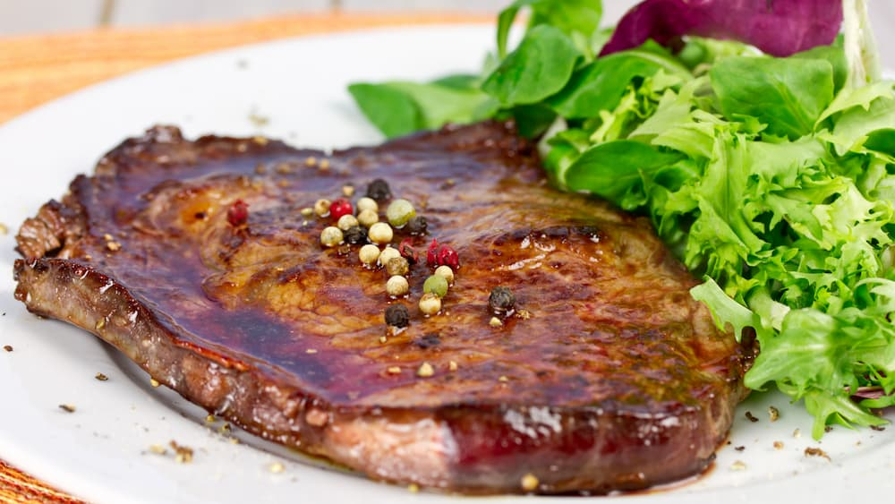

Entrecot de ternera a la plancha en su propio jugo

| Ingredientes: |
- 300 gr de entrecot de ternera (preferiblemente de grosor entre 2-3 cm)
- Sal gruesa
- Pimienta negra molida
- Aceite vegetal o aceite de oliva (para engrasar la plancha)
|
Método de preparación:
- Racion/es: 1
- Tiempo de preparación: 40min
- Precalentar una plancha a fuego alto hasta que esté bien caliente y añadir un poco de aceite a la plancha caliente. Salpimentar el entrecot y ponerlo en la plancha caliente durante 3-4 minutos por cada lado, dependiendo del grosor de la carne.
- Precalentar una plancha a fuego alto hasta que esté bien caliente y añadir un poco de aceite a la plancha caliente. Salpimentar el entrecot y ponerlo en la plancha caliente durante 3-4 minutos por cada lado, dependiendo del grosor de la carne.
- Retirar de la plancha y dejar reposar unos minutos antes de cortarlo. Esto permitirá que los jugos se redistribuyan y la carne se asiente. Cortar el entrecot en rodajas diagonales, en sentido contrario a las fibras de la carne.